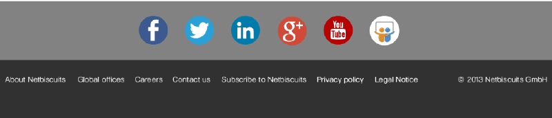

<!DOCTYPE html>
<html lang="en">
  <head>
    <meta charset="utf-8">
    <title>Responsive Image | Netbiscuits</title>
    <meta http-equiv="X-UA-Compatible" content="IE=edge, chrome=1">
    <meta name="viewport" content="width=device-width, initial-scale=1.0">
    <style>
      /*
       * Start: Basic CSS for NB layout
       */
      * {
        margin: 0;
        padding: 0;
        -webkit-box-sizing:border-box;
        -moz-box-sizing:border-box;
        box-sizing:border-box;
      }
      body {
        background: white;
        text-align: center;
      }
      header {
        background: url('header-bg.png') repeat-x center top;
      }
      footer {
        background: url('footer-bg.png') repeat-x center center;
      }
      /*
       * http://www.css3.info/preview/background-size/
       * http://caniuse.com/#search=background-size
       */
      .hero-image {
        width: 100%;
        height: 180px;
        background-image: url('light-bulbs.png');
        background-repeat: no-repeat;
        background-size: cover;
        -webkit-background-size: cover;
        -moz-background-size: cover;
        -o-background-size: cover;
        background-position: center;
        background-color: #eee;
      }
      /*
       * CSS Tricks says you can use MS Filters to get IE,9 support:;
       * http://css-tricks.com/perfect-full-page-background-image/
       */
      .hero-image {
        filter: progid:DXImageTransform.Microsoft.AlphaImageLoader(src='.light-bulbs.png', sizingMethod='scale');
        -ms-filter: "progid:DXImageTransform.Microsoft.AlphaImageLoader(src='light-bulbs.png', sizingMethod='scale')";
      }
    </style>
  </head>
  <body>
    <header>
      
    </header>

    <div class="hero-image">
    </div>

    <div>
      
    </div>
    <footer>
      
    </footer>
  </body>
</html>
